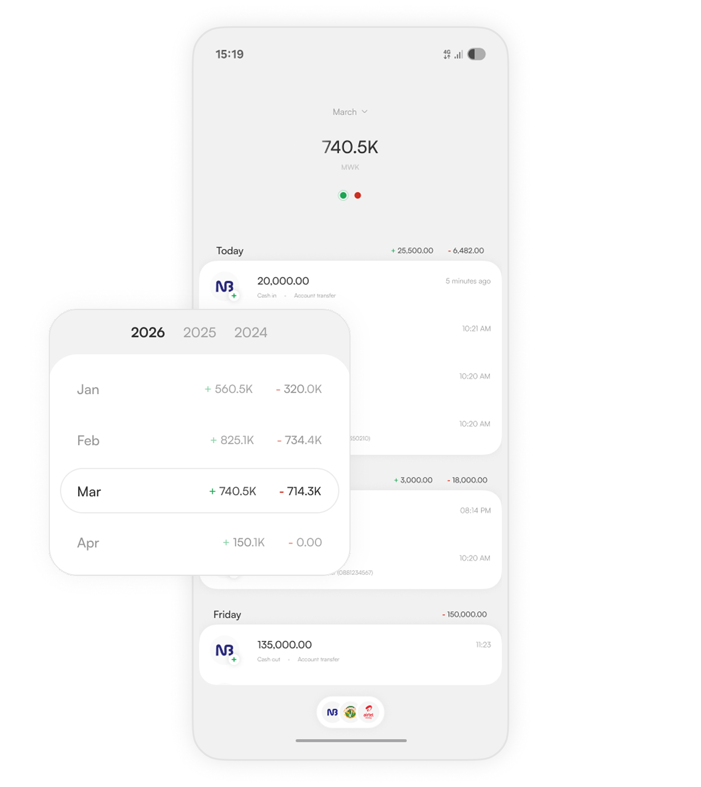

We all had that moment. Kin helps you answer the question by tracking transaction sms
Your data never leaves your phone

Since Kin needs access to SMS' Play protect will block it for security reasons. Disable it temporarily then install Kin.